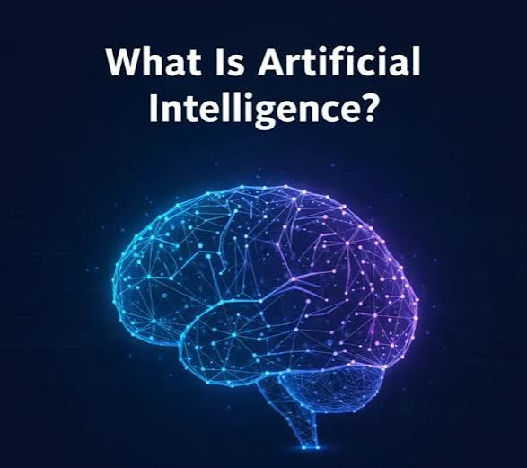

The Era of Artificial Intelligence: The Big Bang from 2020 to Today
While the world was shutting its doors due to the pandemic in 2020, a technological giant was awakening in research labs. Artificial Intelligence (AI) was no longer just algorithms for ranking Facebook posts; it had evolved into a "mind" capable of dialogue, analysis, and creation.

- Before 2020: AI was primarily Predictive—it predicted what you would watch on YouTube or helped translate a simple sentence.
- After 2020: We transitioned to Generative AI. Machines gained the ability to write essays, program websites, and create paintings from scratch.
1. The Turning Point: Why 2020?
If we were to pinpoint the exact date when the revolution we are experiencing today truly began, it would be 2020. That year, OpenAI released GPT-3, the model that shocked the world with its ability to write astonishingly human-like text.
By 2022, the launch of ChatGPT marked the moment AI became accessible to anyone with an internet connection, forever changing the landscape of education and work.
- Sees: You can take a photo of a complex math problem and ask for the solution and an explanation.
- Hears and Speaks: You can have full voice conversations with it to learn a new language.
- Analyzes Big Data: In seconds, it can summarize a 500-page book or extract statistics from massive Excel spreadsheets.
2. The Present: How Do We Live with AI Today?
We are now in the stage of Multimodal Models. This means AI no longer just reads text; it:
- Converting Curricula into Mind Maps and Simplified Explanations Don’t just ask for information; ask it to restructure the material: "I have an exam in Mechanics of Materials. Summarize the 10 most important laws and explain when to use each one with a real-life example."
- Programming and Debugging If you are learning programming (like the HTML you asked about), AI is your best code reviewer. Instead of spending hours searching for a missing semicolon, upload your code and ask: "Why isn't this code working? And what is the most efficient (Clean Code) way to write it?"
- Mock Exams This is the most powerful study method. Upload your notes to the AI and say: "Based on this content, tee with 10 multiple-choice questions (MCQs) and correct my answers with an explanation for each."
- Documented Academic Research Use tools like Perplexity or Consensus; these are AI tools connected to real scientific research that provide citations and references, ensuring the accuracy of your university research.
3. The Student’s Guide: How to Become a "Super Student" Using AI
As a student (especially in Engineering or technical fields), AI is your "Assistant Engineer," not just a search engine. Here’s how to maximize its potential:
- The Golden Rule: Use AI to understand, organize, and save time, but the final responsibility for the accuracy of the information rests with you.
4. Conscious Caution: The "Total Reliance" Trap
AI sometimes suffers from what is called "Hallucination," where it might fabricate information or physics laws that sound correct but are entirely false.
In conclusion we live in an era where students no longer need to memorize everything; instead, they need to learn "how to ask" for information and how to apply it. The world is no longer looking for someone who simply possesses information, but for someone who possesses the skill of interacting with AI.
Do you use AI?!, If not try this

For more AI models
Click here!!
Form
Do you use AI?!, If not try this
For more AI models
Click here!!
Form